OK3562J-UP4_User’s Hardware Manual_V1.0
Copyright
Document classification: □ Top secret □ Secret □ Internal information ■ Open Copyright
The copyright of this manual belongs to Baoding Folinx Embedded Technology Co., Ltd. Without the written permission of our company, no organizations or individuals have the right to copy, distribute, or reproduce any part of this manual in any form, and violators will be held legally responsible.
Forlinx adheres to copyrights of all graphics and texts used in all publications in original or license-free forms.
The drivers and utilities used for the components are subject to the copyrights of the respective manufacturers. The license conditions of the respective manufacturer are to be adhered to. Related license expenses for the operating system and applications should be calculated/declared separately by the related party or its representatives.
Application
This hardware manual applies to Forlinx OK362J-UP4 development board (version 1.3 and above) and FET3562J-UP4 SoM (version 1.1 and above).
Revision History
Date |
Version |
SoM Version |
Carrier Board Version |
Revision History |
|---|---|---|---|---|
11/03/2026 |
V1.0 |
V1.1 |
V1.3 and above |
Initial Version |
Overview
This manual aims to help you quickly get familiar with the product, understand interface functions and configurations. It covers the interface functions and introductions of the development board, product power consumption, and methods for troubleshooting issues during use. Some commands are annotated in the description for user convenience, with a focus on practicality. For information on pin function multiplexing and hardware design guidelines, please refer to Forlinx “OK3562J-UP4 Pin Multiplexing Comparison Table” and “OK3562J-UP4 Design Guide”.
There are four chapters:
Chapter 1. provides an overall overview of the CPU, briefly introducing its performance and application industries;
Chapter 2. offers a general introduction to the SoM, including descriptions and functions of connector pins;
Chapter 3. covers hardware principles and simple design ideas;
Chapter 4. describes the power consumption and other considerations. Additionally, the manual includes explanations of some symbols and formats.
Format |
Meaning |
|---|---|
Note |
Note or particularly important information must be read carefully. |
📚 |
Relevant explanations regarding the testing section |
️🛤️ ️️ |
Related paths. |
1. RK3562J Description
RK3562J is a high-performance, low-power quad-core application processor designed for electronic devices. It integrates multiple embedded hardware acceleration engines to significantly enhance the efficiency of high-end applications. The processor supports near-universal format video codecs, including:
H.264 decoding at 1080p@60fps
H.265 decoding at 4K@30fps
H.264 encoding at 1080p@60fps It also incorporates a high-quality JPEG codec for image processing needs.
RK3562J features a high-performance embedded 3D GPU with full compatibility for OpenGL ES 1.1/2.0/3.2, OpenCL 2.0, and Vulkan 1.1. A dedicated 2D hardware engine is included to optimize display performance and ensure smooth operation.
The processor is equipped with a high-performance memory interface (supporting LPDDR4/LPDDR4X), capable of meeting demanding memory bandwidth requirements.
(Attached: RK3562 Processor Block Diagram)
2. FET3562J-UP4 SoM Description
2.1 FET3562J-UP4 Appearance Diagram

Front

Back
2.2 FET3562J-UP4 SoM Dimension Diagram
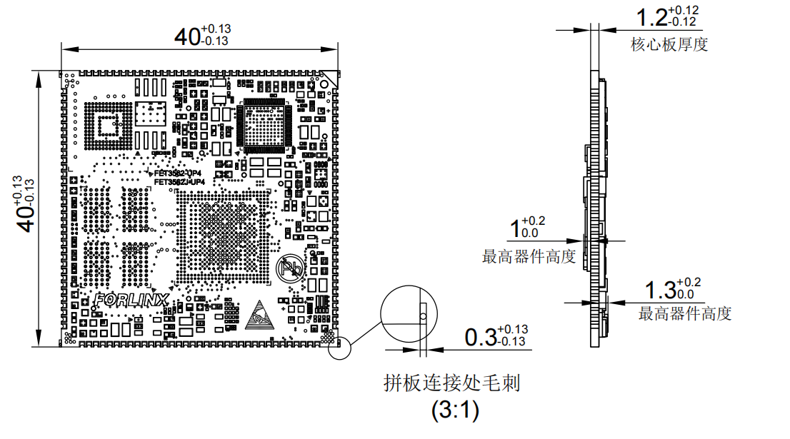
Dimensions: 40mm × 40mm, dimensional tolerance ±0.13mm.
For more dimensional details, please refer to the DXF file.
Plate making process: 1.6mm thickness, 10-layer immersion gold PCB.
2.3 Performance Parameter
2.3.1 System Frequency
Name |
Specification |
Description |
|||
|---|---|---|---|---|---|
Minimum |
Typical |
Maximum |
Unit |
||
System Frequency |
— |
1.2 |
1.8 |
GHz |
— |
System RTC |
— |
32.768 |
— |
KHz |
— |
2.3.2 Power Parameter
Parameter |
Pin No. |
Specification |
Description |
|||
|---|---|---|---|---|---|---|
Minimum |
Typical |
Maximum |
Unit |
|||
Main Power Supply Voltage |
VSYS |
4.75 |
5 |
5.25 |
V |
— |
No-load current |
— |
mA |
Please refer to the power consumption table in the appendix |
|||
Overload current |
— |
mA |
Please refer to the power consumption table in the appendix |
2.3.3 Working Environment
Parameter |
Specification |
Description |
||||
|---|---|---|---|---|---|---|
Minimum |
Typical |
Maximum |
Unit |
|||
Operating temperature |
Working Environment |
0 |
25 |
+70 |
℃ |
Commercial level |
Storage Environment |
-40 |
25 |
+125 |
℃ |
||
Working Environment |
-40 |
25 |
+85 |
℃ |
Industrial Level |
|
Storage Environment |
-40 |
25 |
+125 |
℃ |
||
Humidity |
Working Environment |
10 |
— |
90 |
％RH |
No Condensation |
Storage Environment |
5 |
— |
95 |
％RH |
2.3.4 SoM ESD Features
Parameter |
Specification |
Description |
|||
|---|---|---|---|---|---|
Minimum |
Typical |
Maximum |
Unit |
||
Human Body Model (HBM) |
— |
±1000 |
— |
V |
— |
Charged Device Model (CDM) |
— |
±250 |
— |
V |
— |
2.4 Interface Resources
2.4.1 FET3562J-UP4 SoM Interfaces
Function |
Quantity |
Parameter |
|---|---|---|
USB2.0 |
1 |
Supports 1 x USB2.0 HOST, up to 480Mbps |
UART |
3 |
A and B channels support flow control, with the maximum baud rate of 4Mbps |
SPI |
1 |
Supports both master and slave mode |
I2C |
3 |
Supports standard mode 100kbit/s and fast mode 400kbit/s |
Ethernet |
2 |
Supports 1 x RGMII and 1 x RMII |
USB3.0 |
1 |
Supports USB3.0 master and slave mode |
GPADC |
3 |
10bits, sampling rate up to 1MS/s |
LRADC |
1 |
6-bit sampling resolution, 2KHz sampling rate, used for key detection |
MIPI-DSI |
1 |
Supports 1 x MIPI DSI TX, 4-lanes, resolution up to 2048 X 1080 @ 60Hz; |
MIPI-CSI |
4 |
MIPI_CSI_RX0 and MIPI_CSI_RX1 have a total of 2 ports. |
SD card |
1 |
Compatible with SDIO 3.0 protocol, 4bits data bit width |
SDIO |
1 |
Compatible with SDIO 3.0 protocol, 4bits data bit width |
I2S |
1 |
Sample rate up to : 192kHz |
Audio |
Built - in codec, which directly outputs audio analog signals with a sampling rate ranging from 48KHz to 192KHz: |
|
CAN |
2 |
Supports CAN2.0B, data rate up to 1Mbps |
PWM |
1 |
2.4.2 CPU Interfaces
Function |
Quantity |
Parameter |
|---|---|---|
USB2.0 |
1 |
Supports 1 x USB2.0 HOST, up to 480Mbps |
UART(1) |
≤10 |
Supports flow control, baud rate up to 4Mbps |
SPI |
≤3 |
Supports both master and slave mode |
I2C（2） |
≤5 |
Supports standard mode 100kbit/s and fast mode 400kbit/s |
Ethernet |
≤2 |
Supports 1 x RGMII and 1 x RMII |
PCIe |
≤1 |
PCIe 2.1, can only be used in RC mode, only supports single lane, 5Gbps, |
USB3.0 |
≤1 |
Supports the master-slave mode of USB3.0, and can only be used |
ADC（3） |
≤16 |
10bits, sampling rate up to 1MS/s |
LVDS（4） |
≤1 |
Supports VESA/JEIDA LVDS data format with resolution up to 800 X 1280 @ 60Hz; |
MIPI-DSI(4) |
≤1 |
Supports 1 x MIPI DSI TX, 4-lanes, resolution up to 2048 X 1080 @ 60Hz; |
RGB |
≤1 |
Supports RGB 888 format, with resolution up to 1280× 800 |
MIPI-CSI |
4 |
The MIPI _ CSI _ RX0 and the MIPI _ CSI _ RX1 have two ports in total; |
SD card |
1 |
Compatible with SDIO 3.0 protocol, 4bits data bit width |
SDIO |
≤1 |
Compatible with SDIO 3.0 protocol, 4bits data bit width |
SAI(5) |
≤2 |
Supports protocol I2S, PCM, TDM, sampling rate up to 192kHz |
Audio |
Built - in codec, which directly outputs audio analog signals with a sampling rate ranging from 48KHz to 192KHz: Mono Speaker, class-D, 1.3 W; |
|
PDM |
≤1 |
Up to 8 channels, sampling rate up to 192KHz, master receive mode |
SPDIF |
≤1 |
|
CAN(6) |
≤2 |
Supports CAN2.0B, data rate up to 1Mbps |
PWM |
≤16 |
|
GPIO |
≤79 |
Note: The parameters in the table are the theoretical values of hardware design or CPU.
2.5 FET3562J-UP4 SoM Pin Definitions
2.5.1 FET3562J-UP4 SoM Pin Schematic
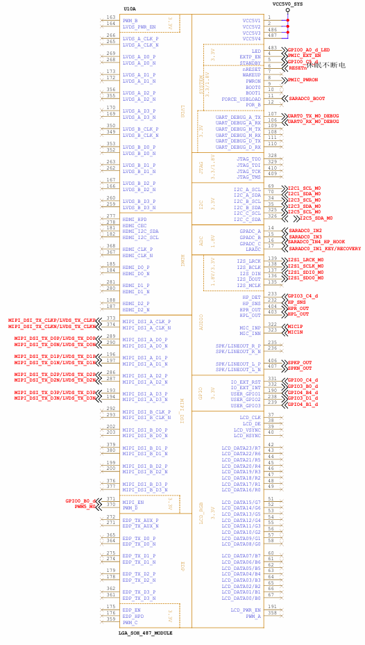
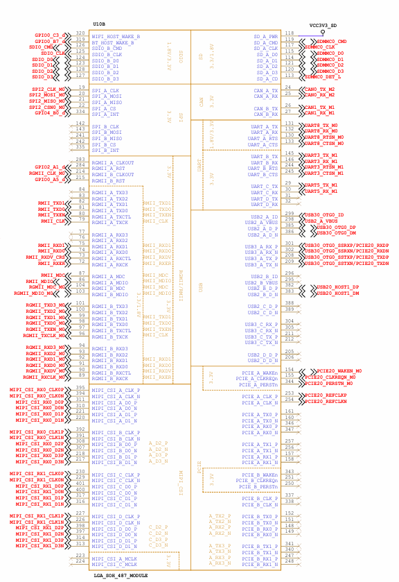
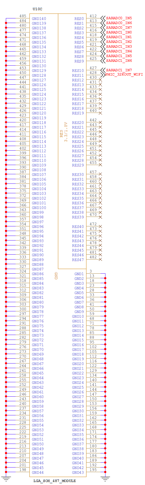
2.5.2 FET3562J-UP4 SoM Pin Function Description
For various functional expansion requirements, please refer to the user document “FET3562-UP4 Pin Multiplexing Table”. However, for more detailed information, it is recommended that you consult the relevant documentation, the chip datasheet, and the reference manual.
2.6 FET3562J-UP4 SoM Pin Definitions
UP4 Standard Interface Functions |
FET3562J-UP4 Pinout Functions |
|---|---|
EXTP_EN |
PMIC_EXT_EN |
STANDBY |
GPIO0_C5_d |
nRESET |
RESETn |
WAKEUP |
NC |
PWRON |
PMIC_PWRON |
BOOT0/BOOT1 |
NC |
FORCE_USBLOAD |
SARADC0_BOOT |
POR_B |
NC |
GPADC_A/B/C |
SARADC0_IN2/3/4 |
LRADC |
SARADC0_IN1_KEY/RECOVERY |
SPI_A |
SPI2 |
SPI_B |
NC |
CAN_A |
CAN0 |
CAN_B |
CAN1 |
UART_A |
UART8 |
UART_B |
UART3 |
UART_C |
UART5 |
UART_D |
NC |
I2C_A |
I2C1 |
I2C_B |
I2C3 |
I2C_C |
I2C5 |
RGMII_A |
NC |
RGMII_B |
RGMII |
RMII_A |
RMII |
RMII_B |
NC |
DEBUG_A |
UART0 |
DEBUG_M |
NC |
DEBUG_D |
NC |
SD_A |
SDMMC0 |
SDIO_B |
SDIO |
I2S |
I2S1 |
Native HP |
HP |
Native SPKOUT_L |
NC |
Native SPKOUT_R |
NC |
Native MIC |
MIC1 |
PCIE_A |
NC |
PCIE_B |
NC |
LCD |
NC |
MIPI DSI_A |
MIPI_DSI/LVDS |
MIPI DSI_B |
NC |
LVDS_A |
NC |
LVDS_B |
NC |
EDP |
NC |
HDMI |
NC |
USB2_A |
USB30_OTG0 |
USB3_A |
USB30_OTG0 |
USB2_B |
USB20_HOST1 |
USB2_C |
NC |
USB3_C |
NC |
USB2_D |
NC |
MIPI CSI_A |
MIPI_CSI_RX0 |
MIPI CSI_B |
MIPI_CSI_RX0 |
MIPI CSI_C |
MIPI_CSI_RX1 |
MIPI CSI_D |
MIPI_CSI_RX1 |
JTAG |
NC |
USER_GPIO1 |
GPIO4_B4_d |
USER_GPIO2 |
GPIO3_D1_d |
USER_GPIO3 |
GPIO4_B1_d |
RES0 |
SARADC0_IN5 |
RES1 |
SARADC0_IN6 |
RES2 |
SARADC0_IN7 |
RES3 |
SARADC1_IN1 |
RES4 |
SARADC1_IN2 |
RES5 |
SARADC1_IN3 |
RES6 |
SARADC1_IN4 |
RES7 |
SARADC1_IN5 |
RES8 |
SARADC1_IN6 |
RES9 |
SARADC1_IN7 |
RES10 |
PMIC_32KOUT_WIFI |
RES11 |
NC |
RES12 |
NC |
RES13 |
NC |
RES14 |
NC |
RES15 |
NC |
RES16 |
NC |
RES17 |
NC |
RES18 |
NC |
RES19 |
NC |
RES20 |
NC |
RES21 |
NC |
RES22 |
NC |
RES23 |
NC |
RES24 |
NC |
RES25 |
NC |
RES26 |
NC |
RES27 |
NC |
RES28 |
NC |
RES29 |
NC |
RES30 |
NC |
RES31 |
NC |
RES32 |
NC |
RES33 |
NC |
RES34 |
NC |
RES35 |
NC |
RES36 |
NC |
RES37 |
NC |
RES38 |
NC |
RES39 |
NC |
RES40 |
NC |
RES41 |
NC |
RES42 |
NC |
RES43 |
NC |
RES44 |
NC |
RES45 |
NC |
RES46 |
NC |
RES47 |
NC |
It is the UP4 standard definition. If compatible design is required, it is recommended to design according to it.
2.7 SoM Hardware Design Description
Power Pin
Function |
Signal Name |
I/O |
Default Function |
Pin Number |
|---|---|---|---|---|
Power supply |
VCC5V0_SYS |
Power Input |
Power Supply for SoM: 5V. The carrier board must provide a minimum continuous current of 2.5A. |
|
VCC3V3_SD |
Power output |
Only used for power supply of carrier board SD card, with maximum output current capacity of 500mA |
||
GND |
Ground |
Power ground and signal ground on the SoM. All GND pins must be connected. |
System Control Pin
Function |
Signal Name |
I/O |
Default Function |
Pin Number |
|---|---|---|---|---|
CPU reset |
RESETn |
I |
SoM power reset, low level effective. Do not add additional capacitive load to this pin, |
6 |
Power enable |
PMIC_EXT_EN |
O |
Enable signal to control the external power supply of the carrier board, |
4 |
On/Off |
PMIC_PWRON |
I |
Low level is valid, long press to turn off, short press to turn on |
8 |
BOOT selection |
EMMC_BOOT |
I |
When the signal is grounded, the startup |
1 |
Wake up |
WAKEUP |
I |
SoM wake-up button |
7 |
Debug Port |
UART2_TX_M0_DEBUG UART2_RX_M0_DEBUG |
I/O |
Debug Port, please keep the port functions. |
106 107 |
(Including minimum system block diagram)
The FET3562J-UP4 SoM integrates power, reset monitoring, and storage circuits, requiring only minimal external circuitry. A complete minimum system can be powered and run with a single 5V supply.
Refer to “Appendix IV. Minimum System Diagram” However, in most cases, it is recommended to connect some external devices—such as a debugging serial port and a port for flashing images—in addition to the minimal system. Otherwise, you can not check whether the system has booted. After completing these steps, you can then add the required functions based on the SoM’s default interface definition provided by Forlinx.
For the design of the SoM’s peripheral circuits, please refer to Section 3.5, “OK3562J-UP4 Carrier Board Description”.
3. OK3562J-UP4 Embedded Development Description
3.1 OK3562J-UP4 Development Board Interface Diagram
Connection method: Stamp hole + LGA. The main interfaces are shown in the figure below:
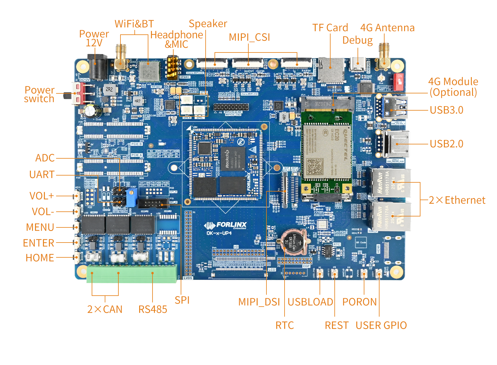
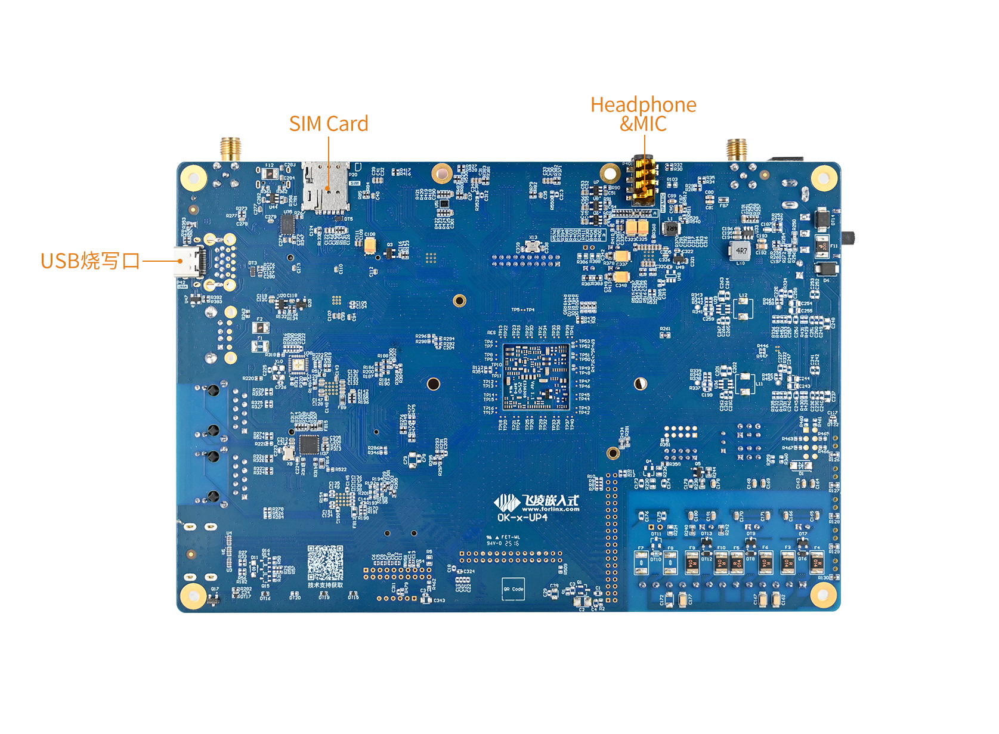
3.2 OK3562J-UP4 Development Board Dimension Diagram

PCB: 130mm×190mm
Mounting hole dimensions: Pitch: 120mm × 180mm, hole diameter: 3.2mm.
Plate making process: 1.6mm thickness, 4-layer PCB.
Power Voltage: DC 12V
The OK3562J-UP4 carrier board is equipped with two mounting holes for heat sinks (3.2 mm in diameter). You may choose to install a heat sink according to the on-site environment. Please add a insulating thermal pad between the contact surface of the heat sink and the SoM. Recommended heat sink: 38mm × 38mm × 10mm. See below for details.
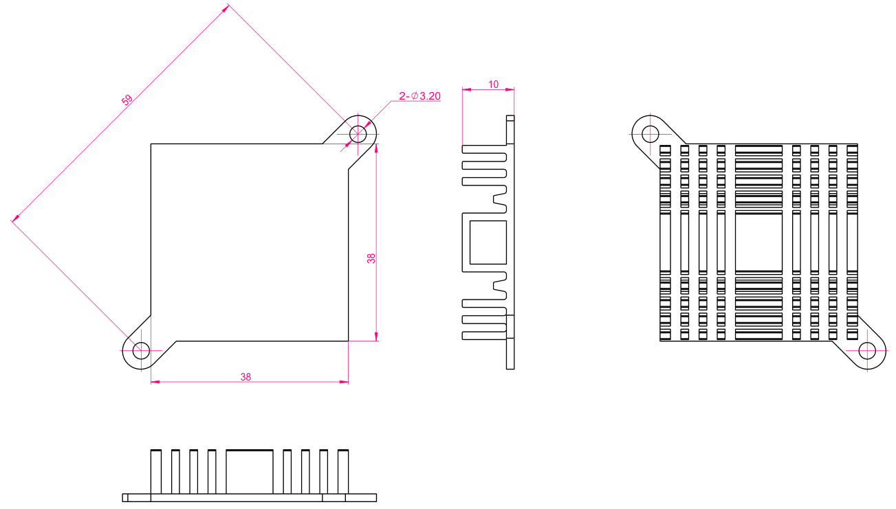
3.3 Naming Rules
A-B-C+DEFGHIJKL:MN-O
Field |
Field Description |
Value |
Description |
|---|---|---|---|
A |
Product Line Identification |
OK |
Forlinx Embedded development board |
- |
Separator |
- |
Confirm whether to add the separator by CPU brand series |
B |
CPU Name |
3562 |
RK3562 |
- |
Segment Identification |
- |
|
C |
Connection |
UP4 |
UniversalPackage general package 4 means 40*40 |
+ |
Segment Identification |
+ |
The configuration parameter section follows this identifier. |
D |
CPU Clock |
18 |
1.8GHZ |
E |
RAM Capacity (Unit: Byte) |
1G |
1GB |
2G |
2GB |
||
4G |
4GB |
||
F |
Single ROM Type |
SE |
eMMC |
G |
Single ROM Capacity： (Unit: Byte) |
8G |
8GB |
16G |
16GB |
||
32G |
32GB |
||
H |
SoM Operating Temperature |
C |
0 to 70℃ Commercial-grade |
I |
-40 to 85℃ Industrial-grade |
||
I |
Configuration No. |
A~Z |
This is the internal identification of the manufacturer and has no impact on the use. |
J |
SoM PCB Version |
11 |
V1.1 |
xx |
Vx.x |
||
K |
Carrier Board Operating Temperature |
C |
0 to 70℃ Commercial-grade |
I |
- 40 to 85 ℃ Commercial grade |
||
L |
Carrier Board PCB Version |
13 |
V1.3 |
xx |
Vx.x |
||
: |
Connector |
Connecting M ~ N Field Parameters |
|
M |
Chip Type |
A~Z |
This is the internal identification of the manufacturer and has no impact on the use. |
N |
Connector Origin |
N |
No Partition\No Connector |
- |
Connector |
- |
Grade Mark Connector |
O |
Grade Identification |
PC |
Prototype Sample |
Blank |
Mass Production |
3.4 Carrier Board Interfaces
Function |
Quantity |
Parameter |
|---|---|---|
WiFi |
1 |
Single antenna 2.4G&5GHz Wi-Fi Dual-band 1X1 802.11ac +Bluetooth 4.2 |
Bluetooth |
1 |
|
Audio |
2 |
Dual-channel speaker connector, class-D, 1.3 W; |
MIPI-CSI |
3 |
FPC socket is led out, 4lane + 2lane + 2lane, of which 4lane can be connected to 4-to-4 analog camera module |
TF card |
1 |
Data rate up to SDR104; |
4G |
1 |
Supports 4G modules with a miniPCIE interface, integrating USB 2.0 communication signals. |
UART Debug |
1 |
Integrated into a single Type-C port, enabling connection to a PC for debugging. |
USB3.0 |
1 |
USB _ A can switch master-slave mode, and USB programming can be performed. |
USB2.0 |
1 |
Led out via USB_HUB |
Ethernet |
2 |
Led out via standard RJ45 socket, 1 x Gigabit port and 1 x 100M network port |
MIPI-DSI |
1 |
4-lane MIPI-DSI, supports a capacitive touch screen with backlight brightness adjustment |
RTC |
1 |
On-board CR1220 battery, keep going when power is off |
RS485 |
1 |
Electrical quarantine |
CAN |
2 |
Supports CAN2.0B, electrical quarantine |
ADC |
3 |
Led out from the pin header and can be connected to the on-board sliding rheostat |
SPI |
1 |
Two SPI interfaces, which are led out from the simple bull seat and can be connected to the peripheral debugging function. |
UART |
1 |
5 x UART, led out through pin headers. |
KEY ADC |
5 |
5 keys are led out via 1 x LRADC |
Note: The parameters in the table are the theoretical values of hardware design or CPU.
3.5 OK3562J-UP4 Carrier Board Description
**Note: **
The component UID with “_DNP” mark in the diagram below represents it is not soldered by default;
The schematic diagrams in this manual are only for interface descriptions. Please refer to the source file materials for hardware design.
3.5.1 Carrier Board Power
As shown, the power supply for the development board is 12V DC （from p28). VDD_5V supplies power to the SoM. Once the SoM is powered up, it outputs PMIC_EXT_EN to enable U32 and U33 on the carrier board, and VCC_5V, VCC_3V3, and VCC_1V8 supply power to the devices on the carrier board. The STANDBY pin controls VCC_3V3_S to enable or disable the power supply for the development board, achieving reduced power consumption.
EXTP_EN ensure to power on the SoM first, followed by the carrier board, to prevent latch-up effects that could damage the CPU.
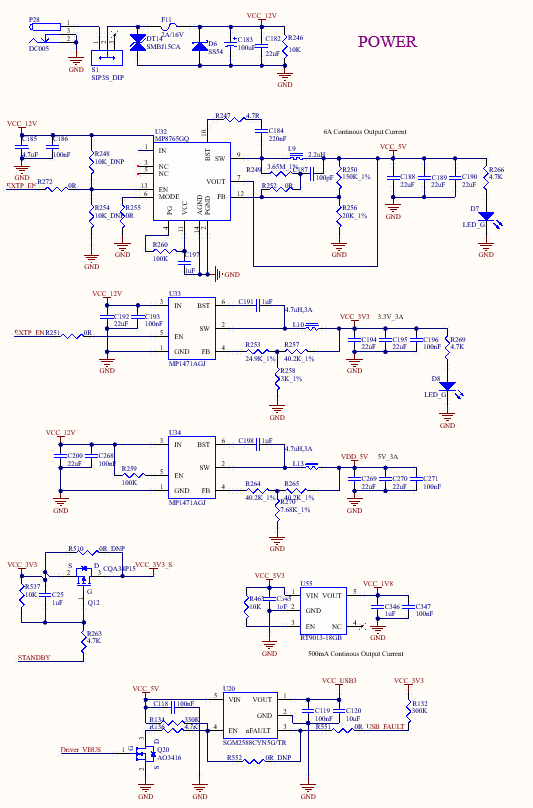
3.5.2 Power/Reset Keys
K1 on the carrier for USB programming. Holding K1 before powering on enables USB programming.
K2 on the carrier board is for powering ON/Off. By default, the board runs automatically when powering on. While running, press and hold the key to shut down; press it shortly to restart.
K5 on the carrier board is for the resetting. Press it reset the power on the SoM to achieving a full board power reset.
K6 on the carrier board is for waking up. After the board enters sleep mode press it shortly to wake up the board.
The FET3562J-UP4 SoM does not have the WAKEUP feature.
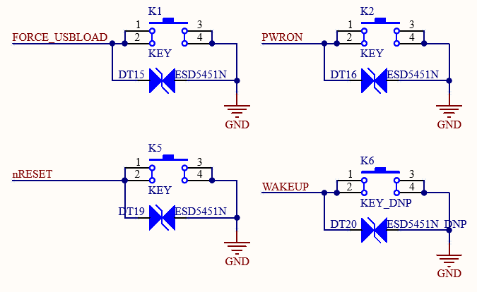
3.5.4 Debugging Serial Port
The carrier board features a single USB Type-C port with 3 x integrated debug serial ports. Install the XR21V1414IM48 driver on your computer, connect the P36 port to the computer, and select the DEBUG_A debug serial port to start debugging.
Only the DEBUG_A debug serial port is led out from the FET3562J-UP4 SoM.


Note: To facilitate debugging later, please ensure that the debugging serial port is led out when designing your own carrier board.
3.5.5 RTC
An RTC device is connected to the carrier board via the I2C_A bus. It enables a compatible power supply from either VCC_3V3 or a button cell battery via D10, which ensures the RTC chip remains powered by the battery after the carrier board is powered off. The RX8010SJ chip is used in the default design. Button battery: CR1220.

3.5.6 TF Card
The TF card interface on the development board is connected to the CPU’s SDMMC0 channel. Power for the TF card is supplied by the VCC_3V3_SD output from the SoM.


Note:
**The bus pull-up resistors have already been configured on the SoM, and it can’t be configured on the carrier board; **
**The TF card is a hot-swappable device. Please implement ESD protection; **
The SD signals should be equalised.
3.5.7 USB Download
There is a USB Type-C port located at P42 on the back of the development board. It utilises the P/N differential signals from the USB 3.0_A (pin P19) signal, facilitating connection to a computer for flashing and debugging.

3.5.8 MIPI_DSI
The P11 on the development board is MIPI_DSI port, supporting 4 Lane MIPI_DSI.

3.5.9 MIPI_CSI
There are there FPC (P6, P7, P8, 0.5mm pitch, with flip cover) on the carrier board for connecting MIPI-CSI camera.
P7 and P8 supports 2lane MIPI-CSI connections.
The P6 port supports 4lane MIPI-CSI connection and multiplexes a signal line with the P9 port. The P9 port is used to connect up to four analogue camera modules. It is not possible to use the P6 and P9 ports for both functions simultaneously.


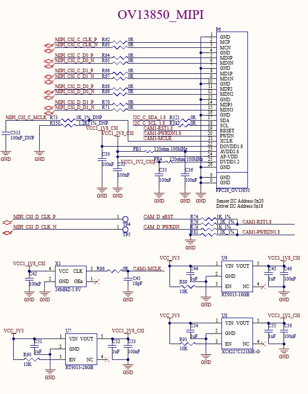

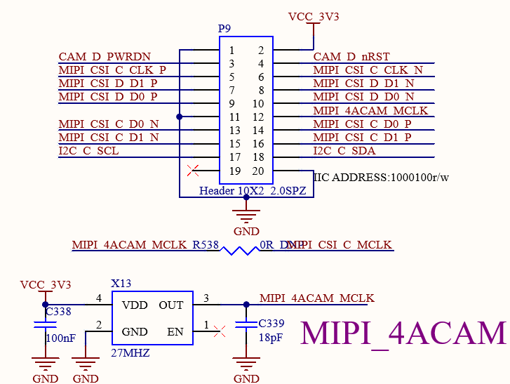
3.5.10 WiFi&BT
The development board comes with an integrated Wi-Fi & Bluetooth module, model number AW-CM358SM. The Wi-Fi module utilizes an SDIO interface, supports dual-band operation in 2.4GHz and 5GHz, and complies with IEEE 802.11a/b/g/n/ac standards. The Bluetooth module uses UART & PCM interfaces and complies with Bluetooth 5.2 specifications. P10 is an SMA interface for antenna connection. Please use a 2.4GHz&5GHz dual-band antenna.
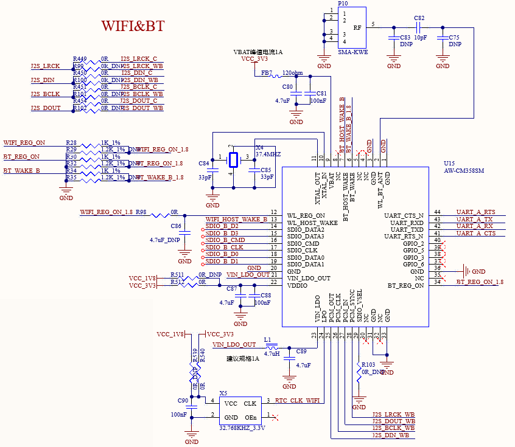
3.5.11 USB2.0
There is an onboard USB 2.0 HUB on the development board, which is expanded to two downstream USB HOST ports, connecting a standard USB 2.0-A interface and a mini-PCIE interface. The mini-PCIE interface can connect the 4G module.
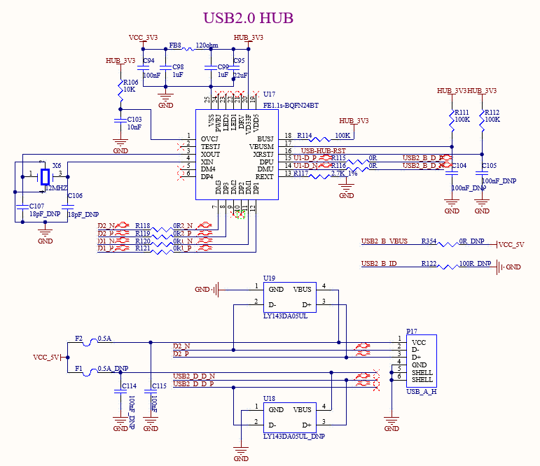
3.5.12 4G
The 4G module can be configured on the development board, and the supported specifications are miniPCIE interface, 3.3 V power supply, and USB2.0 communication.
P20 is a nanoSIM card slot, which is self-ejecting. Pay attention to the insertion direction according to the card identification. It does not support card hot plug.
Before using the 4G function, please power off the board, install the 4G module, the SIM card, and the 4G ipex jumper from the module to the board P15, so that the antenna can be externally connected through the SMA interface of P16.


3.5.13 USB3.0
The development board features an onboard USB 3.0 interface, which is the native USB 3.0 from the SoM. A standard USB 3.0 Type-A interface is connected on the development board. Port A supports OTG, controlled by the DIP switch S3: OFF for Device mode, ON for Host mode.
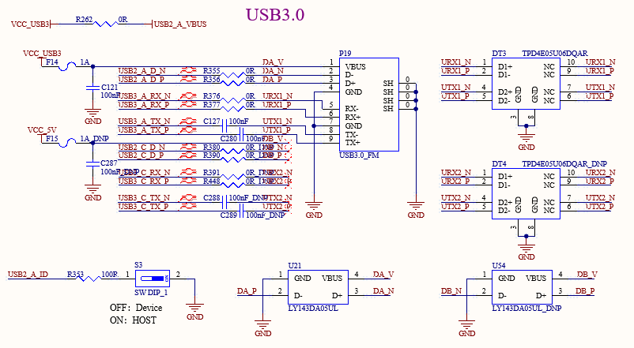
3.5.14 Ethernet
The development board supports two native 1000m network ports, which are realized by using the RGMII of the SoM and the YT8521SH chip, and can be connected to the external network equipment through the standard RJ45 socket with a network transformer.


The development board supports one native 100M Ethernet port, implemented using the SoM RMII interface with the YT8512H chip. It is connected to external network devices via a standard RJ45 connector equipped with a network transformer.
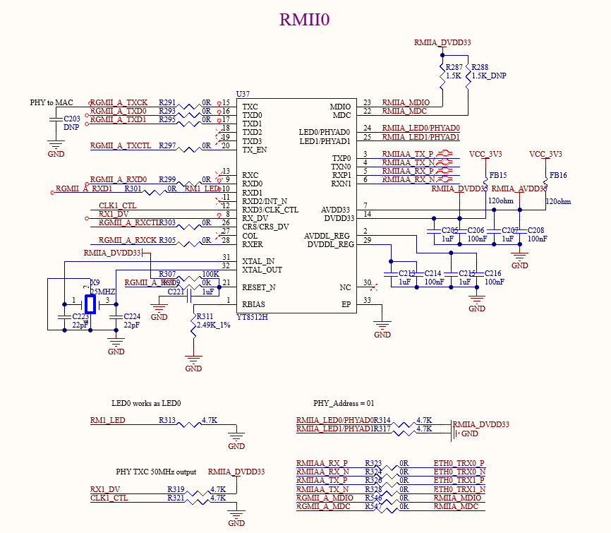
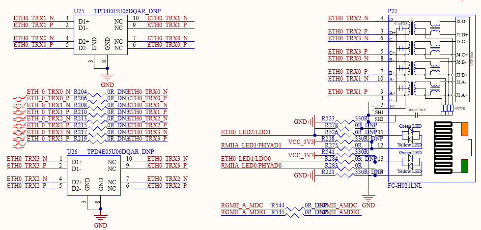
3.5.15 CAN
1 x standard CAN is led out from the development board via native CAN0 and CAN1. Because of the quarantine, the interface supports the maximum rate of 5Mbps, and the electrical quarantine is designed to meet the protection requirements in most scenarios.
The CAN signal is routed via green terminals with a 3.81 mm pitch; a 120-ohm terminating resistor is installed using a jumper cap.
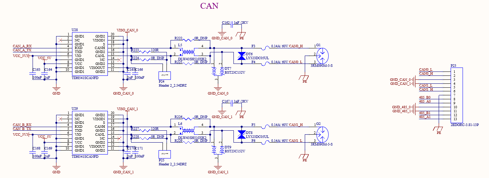
3.5.16 485
1 x standard 485 is led out from the development board via native UART_C. Due to the UART rate limitation of the CPU, the interface supports a maximum rate of 4Mbps, and the electrical quarantine is designed to meet the protection requirements in most scenarios.
The 485 signal is routed via green terminals with a 3.81 mm pitch; a 120-ohm terminating resistor is installed using a jumper cap.
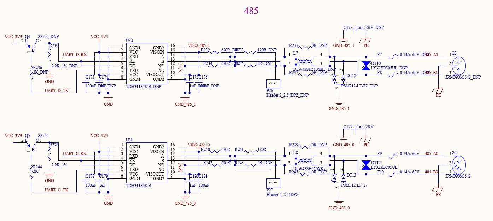
3.5.17 GPADC
The GPADC is connected via 2.54 mm pitch pins. It can be connected directly using DuPont wires via a potentiometer. The SoM features a total of 3 x GPADC, with a maximum sampling voltage of 1.8 V.

3.5.18 UART
1 x five-wire UART is routed from the development board and powered by a 3.3V signal.

3.5.19 SPI
A five-wire SPI interface is led out from the SoM (5V power supply)
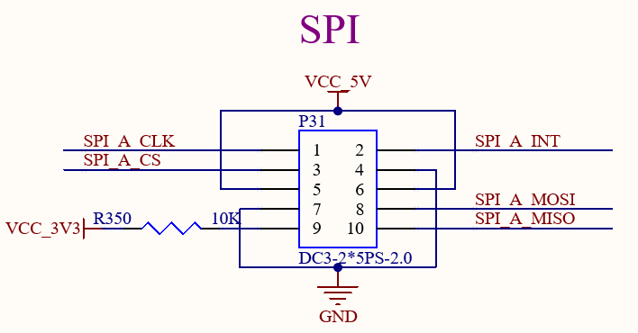
3.5.20 IO Expansion
An IO expansion chip is led out from the development board via I2C. 24 additional I/O pins can be expanded for expanding control signals and resetting signals.

3.5.21 Audio
The development board features a standard 3.5mm headphone jack (CTIA international standard), located at pin P40, which supports stereo headphone playback and mono microphone recording;
The P39 is a speaker port that supports stereo speakers, Class D, with 1.3W of power;


A single I2S signal is routed from the carrier board to the NAU88C22YG CODEC chip, which provides a standard 3.5mm headphone jack and separate left and right channel amplifiers.
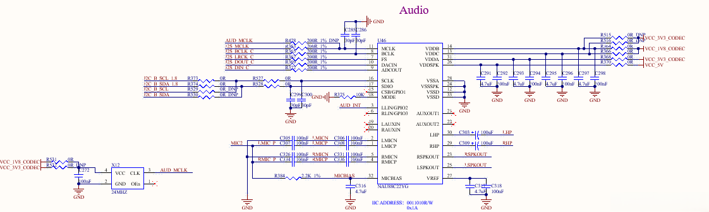
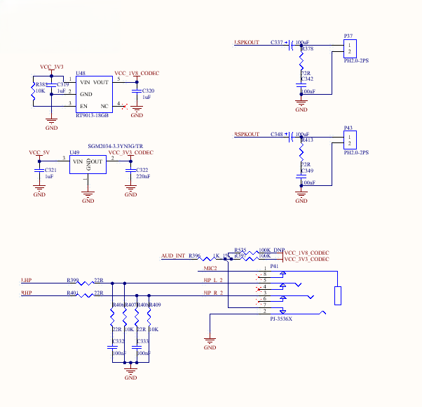
4. Package Dimensions Diagram
Package: LCC+LGA
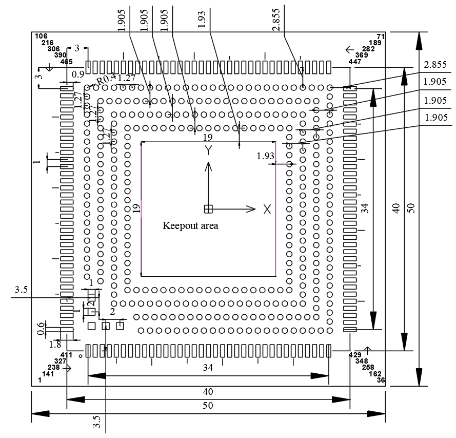
To ensure a high weld yield, please refer to the diagram below for the design of the packaging stencil:

I. Hole Opening Scheme
The steel mesh type is ladder steel mesh, with thickness of 0.1mm and 0.15 mm, and the ladder is on the printing surface;
As shown in the figure below, the thickness of the steel mesh of the LCC pad around the carrier board is 0.15 mm, and the opening method is as shown in the figure, with width of 0.6 mm, length of 2.15 mm outward expansion and 0.3 mm inward contraction. The step range is shifted out 0.7 mm from the root to minimize the impact on the LGA pad.
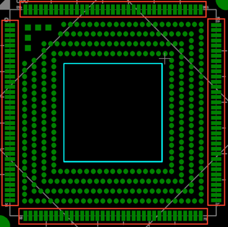

The opening thickness of the LGA pad in the middle is 0.1mm. The opening mode of the two rows of LGA pads on the left and right sides in the direction of the scraper is a round hole with a diameter of 0.5mm. The opening of the other LGA pads is as shown in the following figure. The opening diameter is 0.7 mm. The bridge with a width of 0.15 mm is set at the center of 45 °. The bridge center is a round indent with a diameter of 0.25 mm.


Note:
Since the LGA pads on the UP4 series SoMs use a pre-tinned process, there is a height difference of approximately 0.1 mm between the LCC pads and the LGA pads. This may result in uneven solder wick height between the LCC pads. Please do visual inspection for the LCC soldering;
Since stepped stencils can affect the solder volume on surrounding components, please reduce the aperture size of the stencil openings for these components; For the LGA pad openings in the advancing direction of the scraper, please conduct hole-size reduction in accordance with the No.3.
5. OK3562J-UP4 Development Board Linux Consumption Table
No. |
Item |
SoM Power (W) |
Development Board Power (including SoM) |
|---|---|---|---|
1 |
No-load starting peak power consumption |
2.06 W |
3.216W |
2 |
Sleep power consumption |
0.0279W |
0.672W |
3 |
No-load standby power consumption |
0.62W |
1.56W |
4 |
USB read and write power |
0.775W |
2.052W |
5 |
TF read and write power |
1.185W |
2.124W |
6 |
4G module PING network power consumption |
0.695W |
2.34W |
7 |
WiFi module PING network power consumption |
0.615W |
1.488W |
8 |
7-inch MIPI screen video playback power consumption |
1.815W |
5.256W |
9 |
CPU pressure + memory pressure + eMMC read/write pressure test power |
2.115W |
2.748W |
Note: The SoM configuration is 1GB memory + 8GB eMMC, the 4G module is Quectel EC20, and the screen is an Forlinx optional product. SoM power supply: 5V; and the carrier board is 12V; Power consumption is for reference only.